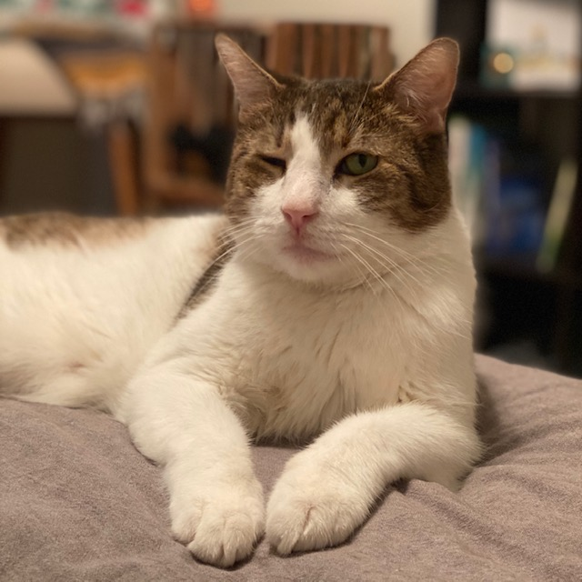
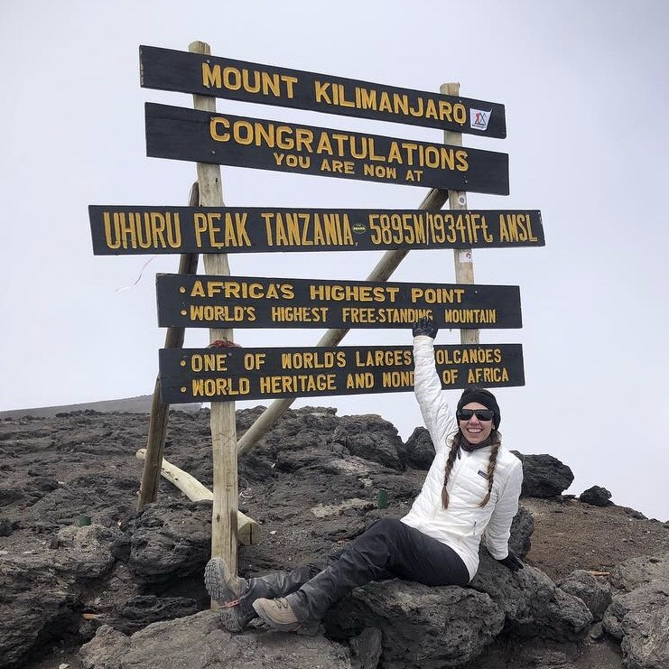

About Me


Hello!
My name is Ashley Lerma often called by my middle name, Scout. I am an aspiring software developer with a background in event management. Outside of work I am a full time cat mom with a passion for travel and the outdoors. I am also one of the lucky few to be born, raised and residing in the wonderful city of Austin, Texas.
Passionate about learning, detail oriented, and self-driven. Currently a student at the UT full-stack development coding bootcamp. Experience working in a fast-paced enviorment where every detail matters.